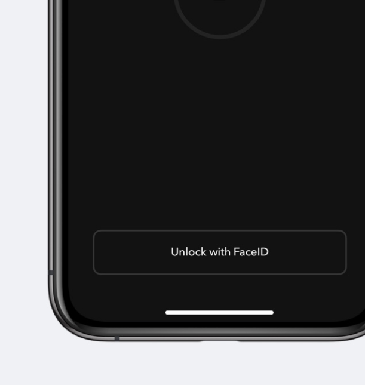
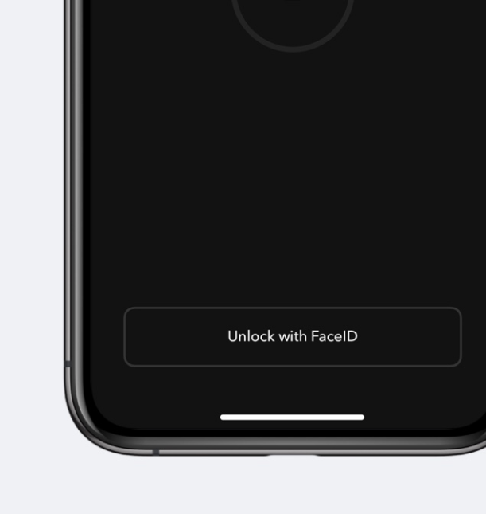

Simplify your to-do list


Create tasks with a clear, achievable goal

Pick a few tasks each day and snooze the rest

Build sustainable habits that feel invisible
Designed with purpose
Popular productivity apps have tagging, color coding, folders, and subfolders. They call it organization. We call it bloat. Doo is everything you need and nothing you don’t.

Effortless task entry
Create a task by typing a title. Tap an icon above the keyboard to set dates, locations, notes, and more. Edit by tapping the text you’d like to change. Simple
One-step habit building
Tap the Edit button to select your tasks for the day and snooze the rest. Doo helps you focus and avoid productivity guilt.
Keeps your data private
Privacy is a fundamental right. That’s why Doo includes screen locking. No "Pro" upgrade required. We also don’t collect your data. What does this mean? No trackers, no cookies, and no analytics. Simple — the way it should be.
 

Other things you might be wondering about
Ask Siri
Use Siri to create tasks, a new list, or mark items completed.

Widget
Ready for iOS 14. View your most recently due task or up to three recent items from any list..

Task Collaboration
Share reminders using iMessage, email, or any other text-based service. Changes sync to all devices.

Accessibility
Dynamic Type and VoiceOver support for a more universal experience for all.

Screen Lock
Protect sensitive information by requiring authentication when the app opens.
iCloud Sync
Sync on all of your iOS and Mac devices using your Apple ID.
Build better habits.
Get the to-do app that helps you focus.